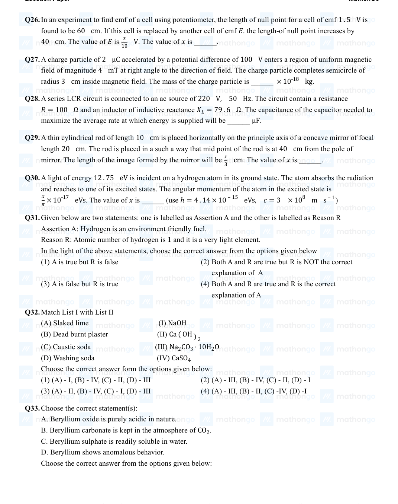

Filter questions
Q1
CHEM-2021-0101-S1-Q052
2021 | 16 Mar | Shift 1
—
Integer
A 6. 50 molal solution of KOH(aq. ) has a density of 1. 89 g cm−3 . The molarity of the solution is mol dm−3 . (Round off to the Nearest Integer). [Atomic masses: K : 39. 0 u; O : 16. 0 u; H : 1. 0 u ]
Answer: 9
Q2
CHEM-2021-0101-S2-Q057
2021 | 16 Mar | Shift 2
—
Integer
At 363 K , the vapour pressure of A is 21 kPa and that of B is 18 kPa . One mole of A and 2 moles of B are mixed. Assuming that this solution is ideal, the vapour pressure of the mixture is___________ kPa . ( Round of to the Nearest Integer . )
Answer: 19
Q3
CHEM-2021-0101-S1-Q057
2021 | 17 Mar | Shift 1
—
Integer
of aqueous solution of Fe2+ in acidic medium completely reacted with of aqueous 15 mL 20 mL 0. 03 M Cr2 O72−. The molarity of the Fe2+ solution is _______ ×10−2M (Round off to the Nearest Integer).
Answer: 24
Q4
CHEM-2021-0101-S1-Q056
2021 | 20 Jul | Shift 1
—
Integer
At , the vapour pressure of benzene is torr and that of methyl benzene is torr. The mole fraction of 20°C 70 20 benzene in the vapour phase at 20°C above an equimolar mixture of benzene and methyl benzene is __ × 10−2. (Nearest integer)
Answer: 78
Q5
CHEM-2021-0101-S2-Q056
2021 | 20 Jul | Shift 2
—
Integer
The vapour pressures of A and B at 25°C are 90 mmHg and 15 mm Hg respectively. If A and B are mixed such that the mole fraction of A in the mixture is 0. 6, then the mole fraction of B in the vapour phase is x × 10−1. The value of x is (Nearest integer)
Answer: 1
Q6
CHEM-2021-0101-S1-Q057
2021 | 22 Jul | Shift 1
—
Integer
If the concentration of glucose (C6H12O6) in blood is 0. 72 gL−1, the molarity of glucose in blood is −× 10−3M (Nearest integer): [ Given : Atomic mass of C = 12, H = 1, O = 16 u]
Answer: 4
Q7
CHEM-2021-0101-S1-Q051
2021 | 24 Feb | Shift 1
—
Integer
4 . 5 g of compound AM . W . = 90 was used to make 250 mL of its aqueous solution. The molarity of the solution in is 10-1 The value of is_____ (Rounded off to the nearest integer) M x × . x
Answer: 2
Q8
CHEM-2021-0101-S2-Q053
2021 | 25 Feb | Shift 2
—
Integer
Consider titration of NaOH solution versus 1. 25 M oxalic acid solution. At the end point following burette readings were obtained. (i) 4. 5 mL (ii) 4. 5 mL (iii) 4. 4 mL (iv) 4. 4 mL (v) 4. 4 mL If the volume of oxalic acid taken was 10. 0 mL then the molarity of the NaOH solution is ___ M . (Rounded- off to the nearest integer)
Answer: 6
Q9
CHEM-2021-0101-S2-Q056
2021 | 25 Feb | Shift 2
—
Integer
If a compound AB dissociates to the extent of 75% in an aqueous solution, the molality of the solution which shows a 2. 5 K rise in the boiling point of the solution is ___ molal. (Rounded-off to the nearest integer) [Kb = 0. 52K kg mol−1] .
Answer: 3
Q10
CHEM-2021-0101-S1-Q056
2021 | 25 Jul | Shift 1
—
Integer
When 10 mL of an aqueous solution of Fe2 + ions was titrated in the presence of dil H2SO4 using diphenylamine indicator, of solution of was required to get the end point. The 15 mL 0 . 02 M K2Cr2O7 molarity of the solution containing Fe2 + ions is x × 10-2 M. The value of x is ______. (Nearest integer)
Answer: 18
Q11
CHEM-2021-0101-S1-Q051
2021 | 26 Aug | Shift 1
—
Integer
An aqueous KCl solution of density 1. 20 g mL−1 has a molality of 3. 30 mol kg−1 . The molarity of the solution in molL−1 is____.(The Nearest integer) [ Molar mass of KCl = 74. 5 g]
Answer: 3
Q12
CHEM-2021-0101-S2-Q051
2021 | 26 Aug | Shift 2
—
Integer
100 mL of Na3 PO4 solution contains 3. 45 g of sodium. The molarity of the solution is ..... ×10−2 mol L−1 . (Nearest integer) [Atomic Masses - Na : 23. 0u, O : 16. 0u, P : 31. 0u]
Answer: 50
Q13
CHEM-2021-0101-S1-Q056
2021 | 26 Feb | Shift 1
—
Integer
224 mL of SO2(g) at 298 K and 1 atm is passed through 100 mL of 0. 1 M NaOH solution. The non-volatile solute produced is dissolved in 36 g of water. The lowering of vapour pressure of solution (assuming the solution is dilute) ( P°(H2O)= 24 mm of Hg ) is x × 10−2 mm of Hg the value of x is (Integer answer)
Answer: 18
Q14
CHEM-2021-0101-S1-Q051
2021 | 27 Jul | Shift 1
—
Integer
The density of NaOH solution is 1. 2 g cm−3. The molality of this solution is m (Round off to the Nearest Integer): [Use : Atomic masses : Na : 23. 0u O : 16. 0u H : 1. 0u Density of cm−3] H2O : 1. 0 g
Answer: 5
Q15
CHEM-2021-0101-S2-Q057
2021 | 27 Jul | Shift 2
—
Integer
In a solvent 50% of an acid HA dimerizes and the rest dissociates. The van't Hoff factor of the acid is _____ ×10−2 (Round off to the nearest integer)
Answer: 125
Q16
CHEM-2021-0101-S1-Q055
2021 | 31 Aug | Shift 1
—
Integer
The molarity of the solution prepared by dissolving 6. 3 g of oxalic acid (H2C2O4 ⋅2H2O) in 250 mL of water in mol L−1 is x × 10−2. The value of x is _________ . (Nearest integer) [Atomic mass : H : 1. 0, C : 12. 0, 0 : 16. 0 J ]
Answer: 20
Q17
CHEM-2022-0101-S1-Q031
2022 | 26 Jun | Shift 1
—
MCQ
A commercially sold conc. HCl is 35% HCl by mass. If the density of this commercial acid is 1. 46 g/ mL , the molarity of this solution is : (Atomic mass : Cl = 35. 5 amu, H = 1 amu )
Answer: B
Q18
CHEM-2022-0101-S1-Q039
2022 | 27 Jun | Shift 1
—
MCQ
Given below are two statements : one is labelled as Assertion and the other is labelled as Reason. Assertion: At 10 °C , the density of a 5 M solution of KCl [atomic masses of K & Cl are 39 & 35. 5 g mol−1 respectively], is ' x ' gml−1 . The solution is cooled to −21 °C . The molality of the solution will remain unchanged. Reason: The molality of a solution does not change with temperature as mass remains unaffected with temperature. In the light of the above statements, choose the correct answer from the options given below.
Answer: C
Q19
CHEM-2022-0101-S1-Q056
2022 | 28 Jun | Shift 1
—
Integer
The vapour pressures of two volatile liquids A and B at 25 °C are 50 Torr and 100 Torr, respectively. If the liquid mixture contains 0. 3 mole fraction of A , then the mole fraction of liquid B in the vapour phase is x . 17 The value of x is
Answer: 14
Q20
CHEM-2022-0101-S2-Q051
2022 | 29 Jun | Shift 2
—
Integer
A box contains 0. 90 g of liquid water in equilibrium with water vapour at 27°C . The equilibrium vapour pressure of water at 27°C 32. 0 Torr. When the volume of the box is increased, some of the liquid water evaporates to maintain the equilibrium pressure. If all the liquid water evaporates, then the volume of the box must be ______ litre. [nearest integer] (Given: R = 0. 082 L atm K−1 mol−1 _ (Ignore the volume of the liquid water and assume water vapours behave as an ideal gas.)
Answer: 29
Q21
CHEM-2023-0101-S1-Q051
2023 | 01 Feb | Shift 1
—
Integer
The density of solution of is mL-1. Molality of the solution is 10-2 (Nearest 3M NaCl 1 . 0 g ______ × m integer). Given: Molar mass of Na and Cl is 23 and 35 . 5 g mol-1 respectively.
Answer: 364
Q22
CHEM-2023-0101-S1-Q057
2023 | 06 Apr | Shift 1
—
Integer
Mass of Urea NH2CONH2 required to be dissolved in 1000 g of water in order to reduce the vapour pressure of water by is (Nearest integer) 25% _______ g . Given : Molar mass of N, C, O and H are 14, 12, 16 and 1 g mol-1 respectively.
Answer: 1111
Q23
CHEM-2023-0101-S1-Q044
2023 | 08 Apr | Shift 1
—
MCQ
The vapour pressure vs. temperature curve for a solution solvent system is shown below. The boiling point of the solvent is _____°C.
Answer: C
Q24
CHEM-2023-0101-S2-Q046
2023 | 11 Apr | Shift 2
—
MCQ
What weight of glucose must be dissolved in 100 g of water to lower the vapour pressure by 0. 20 mm Hg ? (Assume dilute solution is being formed) Given: Vapour pressure of pure water is 54. 2 mm Hg at room temperature.Molar mass of glucose is 180 g mol−1
Answer: A
Q25
CHEM-2023-0101-S1-Q047
2023 | 12 Apr | Shift 1
—
Integer
80 mole percent of MgCl2 is dissociated in aqueous solution. The vapour pressure of 1. 0 molal aqueous solution of MgCl2 at 38oC is _____ mm Hg . (Nearest integer) Given: Vapour pressure of water at 38oC is 50 mm Hg
Answer: 2
Q26
CHEM-2023-0101-S1-Q054
2023 | 15 Apr | Shift 1
—
Integer
The vapour pressure of 30% (w/v) , aqueous solution of glucose is ________ mm Hg at 25∘C . [Given: The density of 30% (w/v) , aqueous solution of glucose is 1. 2 g cm–3 and vapour pressure of pure water is 24 mm Hg .] (Molar mass of glucose is 180 g mol–1 )
Answer: 23
Q27
CHEM-2023-0101-S1-Q038
2023 | 24 Jan | Shift 1
—
MCQ
In the depression of freezing point experiment A. Vapour pressure of the solution is less than that of pure solvent B. Vapour pressure of the solution is more than that of pure solvent C. Only solute molecules solidify at the freezing point D. Only solvent molecules solidify at the freezing point
Answer: A
Q28
CHEM-2023-0101-S1-Q039
2023 | 24 Jan | Shift 1
—
MCQ
Statement I: For colloidal particles, the values of colligative properties are of small order as compared to values shown by true solutions at same concentration. Statement II: For colloidal particles, the potential difference between the fixed layer and the diffused layer of same charges is called the electrokinetic potential or zeta potential. In the light of the above statements, chooses the correct answer from the options given below.

Answer: C
Q29
CHEM-2023-0101-S2-Q045
2023 | 24 Jan | Shift 2
—
Integer
The Total pressure observed by mixing two liquid A and B is 350 mm Hg when their mole fractions are 0. 7 and 0. 3 respectively. The Total pressure becomes 410 mm Hg if the mole fractions are changed to 0. 2 and 0. 8 respectively for A and B . The vapour pressure of pure A is ______ mm Hg . (Nearest integer) Consider the liquids and solutions behave ideally
Answer: 3
Q30
CHEM-2023-0101-S2-Q046
2023 | 24 Jan | Shift 2
—
Integer
The number of units, which are used to express concentration of solutions from the following is _________. (Mass percent, Mole, Mole fraction, Molarity, ppm, Molality.)

Answer: 1
Q31
CHEM-2023-0101-S2-Q047
2023 | 25 Jan | Shift 2
—
MCQ
Based on the given figure, the number of correct statement/s is/are A. Surface tension is the outcome of equal attractive and repulsion forces acting on the liquid molecule in bulk. B. Surface tension is due to uneven forces acting on the molecules present on the surface. C. The molecule in the bulk can never come to the liquid surface. D. The molecules on the surface are responsible for vapour pressure if the system is a closed system.
Answer: A
Q32
CHEM-2023-0101-S1-Q046
2023 | 29 Jan | Shift 1
—
Integer
Solid Lead nitrate is dissolved in 1 litre of water. The solution was found to boil at 100. 15°C . When 0. 2 mol of NaCl is added to the resulting solution, it was observed that the solution froze at −0. 8°C . The solutbility product of PbCl2 formed is _____ ×10−6 at 298 K . (Nearest integer) Given : mol−1 and mol−1 . Assume molality to be equal to molarity in all cases. Kb = 0. 5K kg Kf = 1. 8 kg
Answer: 2
Q33
CHEM-2023-0101-S2-Q046
2023 | 30 Jan | Shift 2
—
MCQ
Lead storage battery contains 38% by weight solution of H2 SO4 . The van't Hoff factor is 2. 67 at this concentration. The temperature in Kelvin at which the solution in the battery will freeze is _____ (Nearest integer). Given Kf = 1. 8 K kg mol−1
Answer: B
Q34
CHEM-2023-0101-S2-Q047
2023 | 31 Jan | Shift 2
—
MCQ
Evaluate the following statements for their correctness. A. The elevation in boiling point temperature of water will be same for 0. 1 M NaCl and 0. 1 M urea. B. Azeotropic mixture boil without change in their composition. C. Osmosis always takes place from hypertonic to hypotonic solution. D. The density of 32% H2 SO4 solution having molarity 4. 09 M is approximately 1. 26 g mL–1 . E. A negatively charged sol is obtained when KI solution is added to silver nitrate solution. Choose the correct answer from the options given below:
Answer: D
Q35
CHEM-2024-0101-S1-Q039
2024 | 04 Apr | Shift 1
—
MCQ
The Molarity (M) of an aqueous solution containing 5.85 g of NaCl in 500 mL water is : (Given : Molar Mass Na : 23 and Cl : 35.5gmol−1 )
Answer: D
Q36
CHEM-2024-0101-S1-Q054
2024 | 04 Apr | Shift 1
—
Integer
Only 2 mL of KMnO4 solution of unknown molarity is required to reach the end point of a titration of 20 mL of oxalic acid (2M) in acidic medium. The molarity of KMnO4 solution should be M.
Answer: 8
Q37
CHEM-2024-0101-S2-Q031
2024 | 06 Apr | Shift 2
—
MCQ
Molality ( m ) of 3M aqueous solution of NaCl is : (Given : Density of solution = 1.25 g mL−1 , Molar mass in gmol−1 : Na −23, Cl −35.5 )
Answer: C
Q38
CHEM-2024-0101-S2-Q057
2024 | 08 Apr | Shift 2
—
Integer
Molality of an aqueous solution of urea is 4.44 m . Mole fraction of urea in solution is x × 10−3 . Value of x is - (Integer answer)
Answer: 74
Q39
CHEM-2024-0101-S1-Q043
2024 | 09 Apr | Shift 1
—
MCQ
0.05MCuSO4 when treated with 0.01MK2Cr2O7 gives green colour solution of Cu2Cr2O7 . The two solutions are separated as shown below : [SPM : Semi Permeable Membrane] Due to osmosis :
Answer: A
Q40
CHEM-2024-0101-S1-Q051
2024 | 09 Apr | Shift 1
—
Integer
Molarity (M) of an aqueous solution containing x g of anhyd. CuSO4 in 500 mL solution at 32∘C is 10−1M . Its molality will be ______ ×10−3 . (nearest integer). [Given density of the solution 2 × m = 1.25 g/mL ]
Answer: 164
Q41
CHEM-2024-0101-S2-Q056
2024 | 09 Apr | Shift 2
—
Integer
The vapour pressure of pure benzene and methyl benzene at 27∘C is given as 80 Torr and 24 Torr, respectively. The mole fraction of methyl benzene in vapour phase, in equilibrium with an equimolar mixture of those two liquids (ideal solution) at the same temperature is _______ ×10−2 (nearest integer)
Answer: 23
Q42
CHEM-2024-0101-S1-Q042
2024 | 27 Jan | Shift 1
—
MCQ
A solution of two miscible liquids showing negative deviation from Raoult's law will have :
Answer: D
Q43
CHEM-2024-0101-S2-Q038
2024 | 27 Jan | Shift 2
—
MCQ
The quantity which changes with temperature is:
Answer: A
Q44
CHEM-2024-0101-S1-Q056
2024 | 29 Jan | Shift 1
—
Integer
A solution of H2 SO4 is 31. 4% H2 SO4 by mass and has a density of 1. 25 g/ mL . The molarity of the H2 SO4 mol−1 solution is M (nearest integer) [Given molar mass of H2 SO4 = 98 g ]
Answer: 4
Q45
CHEM-2024-0101-S2-Q057
2024 | 29 Jan | Shift 2
—
Integer
Molality of 0. 8M H2 SO4 solution (density 1. 06 g cm−3 ) is _______ ×10−3 m . Round off your answer to the nearest integer.
Answer: 815
Q46
CHEM-2024-0101-S1-Q040
2024 | 31 Jan | Shift 1
—
MCQ
Identify the mixture that shows positive deviations from Raoult's Law
Answer: D
Q47
CHEM-2024-0101-S2-Q051
2024 | 31 Jan | Shift 2
—
Integer
The molarity of 1L orthophosphoric acid H3PO4 having 70% purity by weight (specific gravity 1 .54 g cm−3 mol-1) ) is ______ M. (Molar mass of H3PO4 = 98 g
Answer: 11
Q48
CHEM-2025-0101-S2-Q052
2025 | 22 Jan | Shift 2
—
Integer
Density of 3 M NaCl solution is 1.25 g/mL . The molality of the solution is : (1) 1.79 m (2) 2.79 m (3) 2 m (4) 3 m
Answer: 2